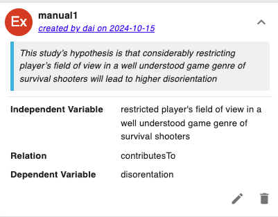

Overview:
During this study, you will be asked to read a scientific paper, and evaluate the hypotheses and their components automatically extracted by AI.
To evaluate whether the sentence can be classified as a hypothesis or not, consider the following definition: A hypothesis is a testable explanation or prediction for an observed phenomenon that can be supported or refuted through experimentation.
In the following sections, you will be presented with more detailed instructions on the task, and some examples to illustrate the terminology to be followed in the task.
Screenshots of the two types of annotations
- Label: A description of the annotation.
- Hypothesis:A hypothesis is a prediction or testable explanation that researchers will verify with experiments. They can be:
- Explicitly stated:
A sentence that is directly stated by the authors with phrases such as 'we hypothesize', 'we expect', 'our hypothesis is' can be a scientific hypothesis. E.g., \"We hypothesize that the administration of a certain medication will result in a decrease in blood pressure among hypertensive patients. \" However, be cautious: sometimes authors may label a statement as a hypothesis, but it does not fit our specific criteria. For instance, 'We hypothesize that exercise is good' lacks specificity and testability, even though the term 'hypothesize' is used.
- Implicitly stated: An implicit hypothesis can be inferred from any text, but typically one finds them implicit in the specification of research questions, research goals, and results. E.g., “Our results suggest that positive affective computational priming positively influences the quality of ideas generated.”
- Note: For simplicity in our study, we will treat both explicit and implicit hypotheses as explicit.
- Analysis Gocal Type: In this study, there are two types of analysis goal for the hypotheses.
- Relation-finding hypotheses: These hypotheses propose a relationship between two or more variables.
Example: We hypothesize that increased levels of air pollution are positively correlated with the prevalence of respiratory diseases in urban areas. - Comparative hypotheses: These hypotheses suggest a comparison between two or more groups of subjects in terms of a variable.
Example: We hypothesize that students who receive personalized feedback will show higher improvement in test scores compared to those who receive generic feedback.
- Components:
For the above two types of hypothoses, we further analyze the specific relation and variables.
- Relation-finding hypotheses:
- IV:Independent variable. It is the variable that is being manipulated or changed in the study.
- DV: Dependent variable. It is the variable that is being measured or observed.
- RE: Relation. The relationship between independent and dependent variables refers to the effect that the independent variable has on the dependent variable. In other words, it describes how the dependent variable changes in response to changes in the independent variable.
In the interface, you will see from the dropdown window of RE, to choose from.
- Comparative hypotheses:
- Var: Variable. This indicates the variable that can be measured for both the groups (Left and Right).
- OP: Operator. It specifies how the variables are expected to be related to each other, using comparative words such as "greater than". In the interface, you will see 5 types of operators as below, to choose from.
'comparesTo', 'hasSimilarValueAs', 'hasSameValueAs', 'hasDifferentValueFrom', 'hasLargerValueThan'
- Left:
Left group. Group of samples or artifact with certain quality and differs from the group it will be compared with.
- Right:
Right group. Same definition as left group.
Note: You will see above bold text in the tool interface as fields names, you can always come back to this guideline for reference.
Example hypotheses
Here are some examples of annotated hypotheses, relations and components for your reference:
Example 1

| Hypothesis Text | This studys hypothesis is that considerably restricting players field of view in a well understood game genre of survival shooters will lead to higher disorientation. |
| Excerpt | It has been called as an experience of deep involvement in a game, during which players forget about their everyday concerns, lose track of time and become less aware of their real world surroundings [12] . Jennett et al. [12] have produced an extensively validated questionnaire which measures total immersion. being a big part of PX, makes an interesting first viewpoint from where uncertainty's relationship with PX can be looked at. This study's hypothesis is that considerably restricting player's field of view in a well understood game genre of survival shooters will lead to higher disorientation. should considerably overlap with randomness in the chosen circumstances. and exploration should remain more or less the same due to the clarity of mechanics and goals in the genre. The intention of finding uncertainty's relation with immersion is rather exploratory however from the above literature, immersion should not be negatively impacted by high uncertainty. This is a single experiment with a two step inference process where step 1 aims to determine the change in uncertainty by restricting game visibility whereas step 2 aims to explore the relationship between uncertainty and player immersion. It is a between participants experiment where players were asked to play a game, with one group having clear visibility and the other group with restricted visibility of the game. |
| Reason | The statement is explicitly stated as a hypothesis, specifically of a relation-finding type, by proposing contributesTo relation between "restricted player's field of view in a well understood game genre of survival shooters" and "disorientation". |
Example 2
| Hypothesis Text | There was no significant difference (see Figure 6) found in total immersion with or without uncertainty confirmed by a t-test (t = -0.51, df = 29, p-value = n.s.) |
| Excerpt | In step 2, the relationship of uncertainty and immersion was studied. This was done by seeing the change between total immersion in the experimental condition (with restricted visibility) versus the control condition(with clear visibility). This was more exploratory in nature, however from the literature it was hoped that immersion should not be negatively impacted by the increased disorientation and randomness. There was no significant difference (see Figure 6 ) found in total immersion with or without uncertainty confirmed by a t-test (t = -0.51, df = 29, p = n.s.). For uncertainty, the results support the hypothesis. disorientation and randomness was predicted in the chosen experiment thus randomness also significantly increases. This is quite a positive outcome, especially given that the chosen players were familiar with shooter games. A number of the players enjoyed the challenge of the game, with one saying "yeah, very small view field but still fun" and another giving a suggestion for the limited field view version -"personally, this one could be a mini-game". This, along with self-reports, tends to indicate familiarity with this type of game and knowledge of how to play. |
| Reason | The statement, while not explicitly labeled as such, structurally presents itself as a hypothesis. Specifically, it suggests a comparative type, given no significant difference between with and without uncertantity in terms of total immersion. |
Example non-hypothesis
Here is one example of non-hypotheses for your reference:
| Hypothesis Text | It specifically tests the hypothesis that multilingual Twitter users serve as bridges between different clusters in the network |
| Excerpt | First, it focuses on the emergent network of message sharing activity. This network is formed by Twitter users mentioning other users by username, replying to tweets, and retweeting (resending/ forwarding) tweets. This higher bar for a network tie captures the dynamic, interaction patterns rather than the more static, following network on the platform. Consistent with previous work and corresponding with the low overlap in hashtag/ link domains, it is predicted that the mentions/retweet network will have many clusters composed of a single, dominant language (H1). Second, this paper examines the bridging role of multilingual users at a full network level rather than an ego-net level. It specifically tests the hypothesis that multilingual Twitter users serve as bridges between different clusters in the network (H2). If language does structure the network but multilingual users serve as bridges between languages as predicted, then it would be useful to know the distribution of multilinguals and how they connect users across languages when designing search and friend recommendation approaches. Strongly connected languages are likely good languages to draw additional results from for search or friend recommendations when insufficient results are available in the preferred language(s) of the user. In what languages are users more likely to cross language divides? |
| Reason | Based on the authors' context, this can be viewed as a hypothesis. However, it come across as a decalarative statement about multilingual Twitter users. Within the boundaries of the given excerpt, it is challenging to perceive the specific structure of the hypothesis. Particularly, we are unable to pinpoint the clear variables or relationships or groups involved. Therefore, in accordance with our interested type of hypotheses, this does not clearly qualify as a hypothesis leading to a false negative situation. |